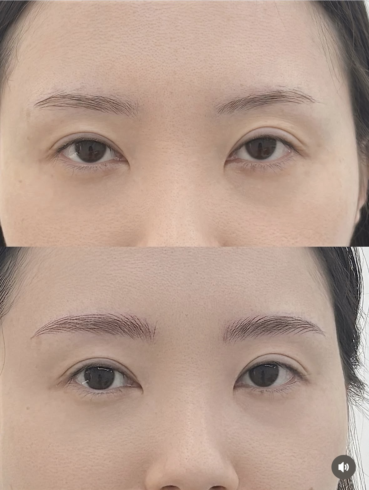

G.ANCE
BROW · LASH · BEAUTY · 광주 광산구
BROW STUDIO · G.ANCE
얼굴형부터 생활패턴까지 꼼꼼히 살펴
오직 나를 위한 눈썹을 설계합니다
인스타그램 DM으로 연결됩니다 · @g.ance_

BEFORE
나만의 디자인을 못 찾겠어요
어디서 받아도 '내 눈썹이 아닌 것' 같은 느낌
자연스러울지 걱정돼요
티가 너무 나거나 어색할까 봐 망설여지는 마음
매일 아침 눈썹 그리는 게 너무 번거로워요
한쪽이 잘 안 그려지는 날엔 하루가 다 틀린 느낌
G.ANCE가 그 고민에 답합니다.
얼굴형·이목구비·생활패턴을 함께 살피고
나에게 꼭 맞는 눈썹을 설계해 드립니다.
HOW TO CHOOSE
잘하는 곳에는 반드시 이유가 있습니다
얼굴형에 맞는 1:1 디자인인가요?
누구나 동일한 모양이 아닌, 내 얼굴에 맞게 설계된 디자인이어야 오래봐도 자연스럽습니다.
원장이 직접 시술하나요?
눈썹 반영구는 경험과 감각이 결과를 좌우합니다. 직접 상담부터 시술까지 책임지는 원장인지 확인하세요.
사후관리까지 책임지나요?
시술 후 관리가 유지력에 큰 영향을 줍니다. 관리법 안내와 리터치까지 함께하는 곳인지 확인하세요.
WHY G.ANCE
상담부터 리터치까지, 처음과 끝을 책임집니다
1:1 퍼스널 디자인
얼굴형·이목구비·피부톤·생활패턴을 함께 살피고 오직 나에게 맞는 눈썹 모양을 설계합니다.
원장 직접 시술
이지원 원장이 상담부터 시술까지 직접 진행합니다. 중간에 다른 직원으로 바뀌지 않습니다.
철저한 위생·프리미엄 자재
일회용 바늘 사용, 엄선된 안료로 피부에 부담을 최소화하도록 관리합니다.
철저한 사후관리
시술 후 관리법을 상세히 안내하고, 리터치까지 꼼꼼하게 챙깁니다.
DIRECTOR
이지원 원장
G.ANCE의 모든 시술은 이지원 원장이 직접 진행합니다.
1:1 상담을 통해 고객 한 분 한 분께 가장 자연스러운 결과를 드리기 위해 노력합니다.
REVIEW
* 결과는 개인에 따라 다를 수 있습니다
BEFORE
사진을 넣어주세요
AFTER
사진을 넣어주세요
"일반눈썹시술은 지속력도 짧고, 자연스럽지 않아서 헤어스트록을 해보았는데 다른 눈썹시술보다 훨~씬 지속력도 길고 무엇보다 제 눈썹 같아서 너무너무 맘에 들어요!! 원장님께서 디자인도 얼굴에 맞게 잘해주셨고, 아프지 않아서 좋았어요. 다음에도 또 헤어스트록 할 것 같아요. 진짜 만족도 최상입니다. 눈썹이 이쁘니까 화장이 매번 맘에 들어요."
— 실제 방문 고객 후기 (동의 후 게재)
MENU
헤어스트록 (자연눈썹)
결 표현 · 약 30분~1시간
(원장 확정 필요)
콤보 브로우
결+그라데이션 · 약 1시간
(원장 확정 필요)
파우더 브로우
그라데이션 · 약 1시간
(원장 확정 필요)
* 메뉴별 정확한 가격은 DM으로 문의해 주시면 안내드립니다.
* 얼굴형·디자인에 따라 상담 후 최적 메뉴를 추천해 드립니다.
FAQ
Q. 얼마나 유지되나요?
A. 시술 기법, 피부 타입, 생활 습관에 따라 개인차가 있습니다. 일반적으로 오래 유지되도록 설계하며, 리터치를 통해 더욱 선명하게 관리하실 수 있습니다. 정확한 안내는 상담 시 말씀드립니다.
Q. 시술 중 아픈가요?
A. 개인 피부 민감도에 따라 다를 수 있습니다. 진행 중 편안하게 받으실 수 있도록 세심하게 케어해 드립니다.
Q. 어떤 메뉴가 저에게 맞나요?
A. 얼굴형, 기존 눈썹 상태, 원하는 느낌에 따라 달라집니다. DM으로 원하시는 분위기나 사진을 보내주시면 맞춤으로 추천드립니다.
예약 & 정책 안내
예약 변경은 시술 하루 전까지 인스타 DM으로 부탁드립니다
당일 취소 시 예약금 차감이 발생할 수 있습니다
리터치는 시술 후 4주 이내 1회 제공됩니다
시술 특성상 환불은 어렵습니다. 궁금한 점은 미리 상담해 주세요
RESERVATION
G.ANCE 이지원 원장 · 광주 광산구
📩 인스타 DM으로 예약하기 📞 전화 연결 · 010-9255-4659
광주광역시 광산구 첨단중앙로152번길 6-11 3층 302호
인스타그램 @g.ance_